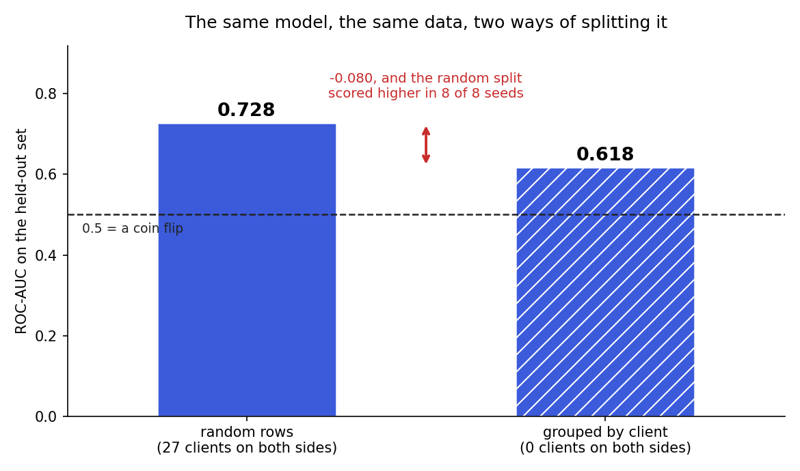
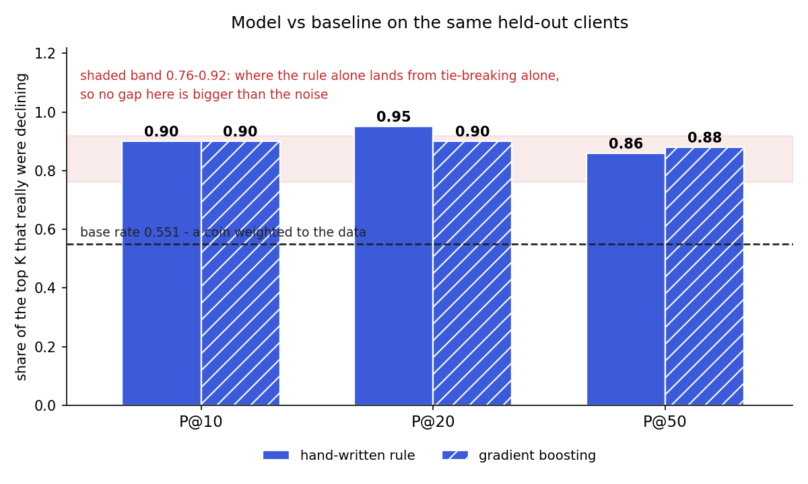
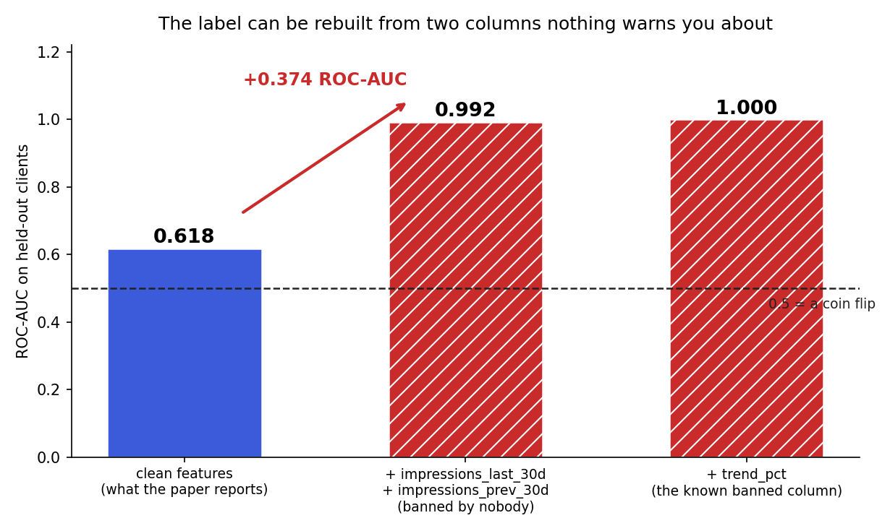
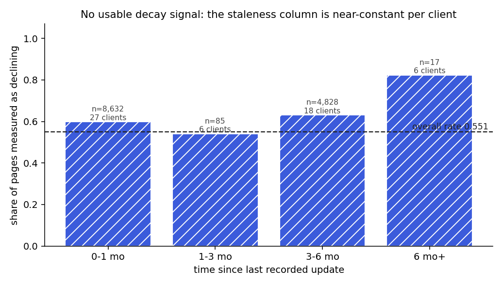
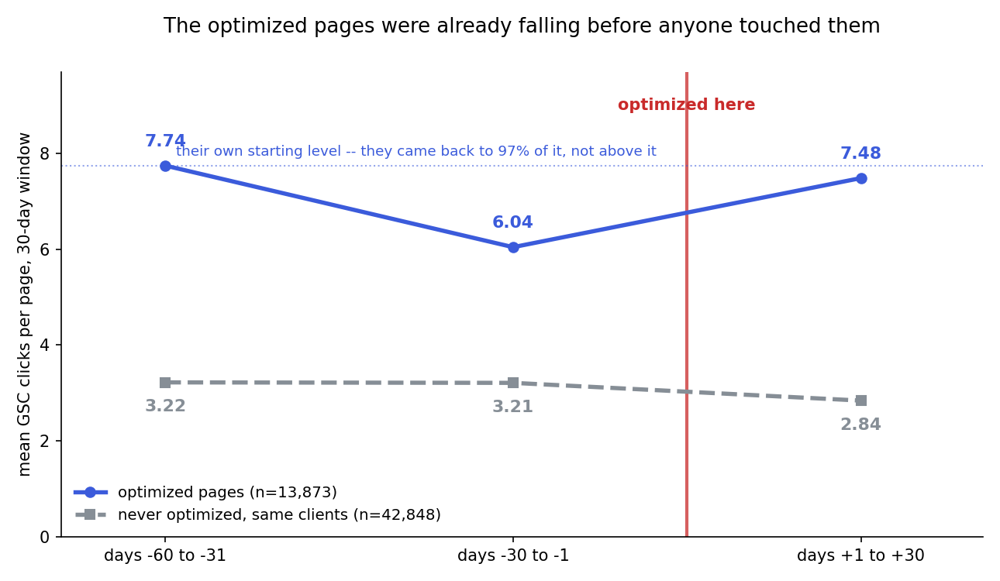
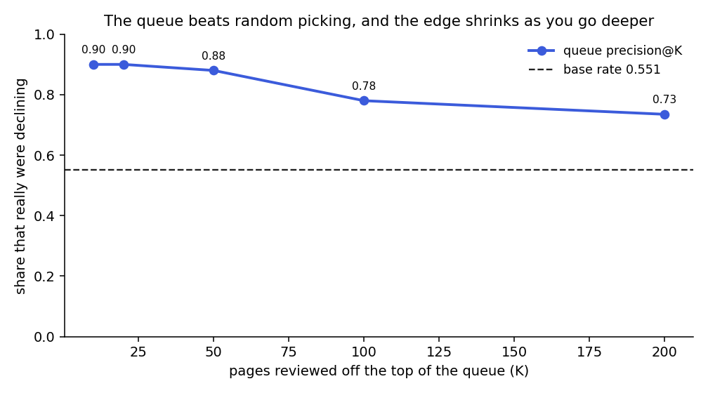

Which page do you fix first?
Ranking content pages for refresh review on 30,000 pages of real client search data — and testing honestly whether a learned model earns its place over a five-line rule anyone can read.
Abstract. A content team can review perhaps fifty pages a month out of a portfolio of thousands, so the practical question is not "which pages are declining" but "which fifty do we look at first". I built a refresh-priority ranker on the FlyRank internship dataset — 30,000 pseudonymised content items across 32 clients, with trailing-90-day search metrics — comparing a five-line hand-written rule against four models, all judged on the same clients none of them had ever seen. On that held-out set the best model reached Precision@50 of 0.88 against a base rate of 0.551, and the hand-written rule reached 0.86. That two-point gap sits inside a noise band of 0.76–0.92 that the rule alone moves through purely from how tied scores are broken, so the honest reading is that the model did not beat the rule. Four negative results outweigh the ranking itself: a bootstrap over held-out clients puts the model-minus-rule difference at −0.260 to +0.140, an interval containing zero; splitting by row rather than by client inflates ROC-AUC from 0.618 to 0.728 in 8 of 8 draws, and the label proves exactly reconstructible from two columns no guidance bans, lifting the same model to 0.992; and a difference-in-differences on 13,233 genuinely optimized pages from the 79-million-row warehouse fails its own placebo test, because those pages were selected while already falling and recovered only to 97% of their own baseline, so this data cannot show optimization is why.
The decision this supports
FlyRank's clients publish more content than anyone can maintain. Pages age, search results shift underneath them, and traffic drifts down slowly enough that nobody notices a specific page dying. The team's real constraint is not knowledge, it is hours: a strategist has a limited number of review slots each month and thousands of candidate pages.
So the question I set out to answer is narrow on purpose:
Given a fixed number of review hours, which pages should a content team look at first?
Notice what that question does not ask. It does not ask whether refreshing a page will recover its traffic. Nothing in this dataset can answer that, because nobody ran an experiment where pages were assigned at random to be refreshed. The data is one snapshot of what already happened. That distinction runs through the whole paper: everything here is decision support — a better order to work through — and never a promise about an outcome.
A second thing shapes the whole project. I started with a hand-written rule, before any model, and kept it as the thing to beat. A rule a strategist can read in ten seconds has real advantages a model does not: it explains itself, it fails in ways you can predict, and nobody has to trust it. A model has to earn its way past that, and the interesting finding is how hard that turned out to be.
If you only take one thing from this paper
Four findings follow and they are not equally strong, so here is my own ranking rather than a flat list.
Trust first: splitting the data by row instead of by client inflates ROC-AUC from 0.618 to 0.728, and it does it in 8 of 8 random draws. That gap is larger than the gap between any two models I tried. It is the finding I would defend hardest, because it reproduces every time and it changes what you would do on Monday: get the split right before tuning anything.
Trust second: the label can be rebuilt exactly from two columns no guidance bans — correlation 1.0000 across all 26,612 rows. That is arithmetic, not inference, so it is not really open to argument.
Believe, with the interval attached: the model did not beat the hand-written rule. The point gap is +0.02, and a bootstrap over held-out clients puts it between −0.260 and +0.140. That interval is wide because nine clients is not many. The honest reading is not "the rule wins" — it is "this data cannot tell them apart", which is still a reason to ship the rule, since the rule is free to explain and free to trust.
Most interesting, least conclusive: the one causal test I could run failed its own placebo. That failure is the finding. It is also the piece resting on the most assumptions, and I would not build a business case on it.
Data
Release: the FlyRank ML Internship starter dataset,
content_refresh_anonymized.csv — 30,000 rows and 44 columns, one row per
pseudonymised content item, 32 clients, with trailing-90-day search and analytics
metrics. Content and client identifiers are pseudonyms used only for grouping and
splitting; they are never features, and no client name, URL or query appears anywhere in
this paper or its repository.
I also queried the gated warehouse release for scale checks — a monthly partition of
fact_content_daily_performance, which holds 78,835,655 rows at
report_date × client × content grain. The modelling in this paper runs on the 30,000-row
snapshot, because iterating against the full table hits rate limits and buys nothing the
snapshot cannot answer.
What was excluded, and why
One eligibility gate, fixed before any modelling and applied identically to the rule and every model:
| Filter | Reason |
|---|---|
impressions_90d >= 250 | Below this, a "decline" is noise on a handful of views |
avg_position > 0 | Zero means "no data" in this dataset, not rank zero — 1,205 rows |
avg_position <= 20 | Past position 20 the fix is not a content refresh |
Date windows
Worth stating plainly, because it constrains everything: this snapshot carries no
calendar dates at all. There is no report_date column. Every window is
relative to the moment the extract was taken — *_90d totals for the trailing
ninety days, and a *_last_30d versus *_prev_30d pair splitting the
most recent sixty of those days in half. Page-level time is relative too:
content_age_days spans 90–564 days and days_since_last_update spans
1–373.
The practical consequence is that this work cannot say anything about a specific month, and
cannot be re-run "as of" an earlier date. Anything time-aware needs the warehouse release,
where report_date exists and runs 2025-01-27 to 2026-06-30.
What was excluded
That leaves 13,562 eligible pages across 29 clients. The gate is a survivorship filter and I name it here rather than burying it: everything in this paper describes pages that already get meaningful search traffic. Pages nobody finds are a different problem and this work says nothing about them.
The target is is_declining, derived from trend_direction,
which is itself computed from trend_pct. Both of those columns are
therefore permanently banned as features — using either is not a modelling choice, it
is asking the model what the answer is. Section 3 shows what happens when you do.
Four more columns are excluded for the same reason, and this is the part the
documentation does not tell you. impressions_last_30d,
impressions_prev_30d and their click and session equivalents are the raw
ingredients the trend is computed from. I checked rather than assumed, and the first pair
reconstructs trend_pct exactly — correlation 1.0000, with
100% of 26,612 rows matching to within 0.6 percentage points:
trend_pct == (impressions_last_30d - impressions_prev_30d) / impressions_prev_30d * 100Methodology
Assumptions, stated so they can be argued with
- A page whose click trend is measured as down is worth a human look. This is the dataset's definition of the problem, not a claim that down means broken.
- A click-through rate below the median for its own position tier indicates a listing problem rather than a ranking problem.
- Ninety days is long enough for a trend and short enough to still be true.
The baseline: a rule you can read
Written before any model, deliberately simple. It scores a page on two terms — how far its CTR sits below the median for its position tier, and how long since it was last updated:
tier_median = median CTR of all pages in the same position tier
ctr_gap_ratio = clip((tier_median - ctr) / tier_median, 0, 1)
freshness = min(days_since_last_update / 365, 1)
score = ctr_gap_ratio + freshnessTwo things about this. It is the thing to beat, not a strawman — I spent real effort
on it. And its blind spot is visible in the arithmetic: a page with zero clicks gets the
maximum possible ctr_gap_ratio, so pages nobody clicks float straight to the
top. That flaw comes back in the results.
Features
Fourteen columns, all knowable at prediction time: the two rule terms plus raw CTR, average position, impressions, clicks, days since last update, content age, word count, engagement rate, scroll rate, days with impressions, search volume and competition. No identifiers. No label-derived columns.
One feature deserves a flag rather than silence: days_with_impressions
counts days the page was visible inside the same 90-day frame the trend is cut from, so
it sits closer to the label than anything else I kept. I kept it and I am naming it.
Validation design — the part that mattered most
Rows in this dataset are not independent. Pages belonging to one client share a CMS, a publishing cadence, an audience and a tracking setup. If some of a client's pages are in the training set and others in the test set, a model can learn "this is client 7, and client 7's pages tend to decline" and score well without having learned anything about content at all.
So the split is GroupShuffleSplit on client_id: 30% of
clients held out whole, giving 2,955 test pages from 9 clients that appear
nowhere in training. It is asserted in code, not assumed:
assert not (set(train_clients) & set(test_clients)), "clients leaked across the split"Leakage check, in two parts
A validation harness that has never caught anything is not evidence of clean data — it
is an untested smoke alarm. So I deliberately broke it: I put trend_pct, the
banned label-derived column, back into the features and re-ran. ROC-AUC went to
1.000, with that single column taking 0.999 of the
model's feature importance. The alarm works, which is what makes the honest 0.618
believable as a measurement rather than a hope.
Then I asked a second question, which turned out to matter more: is there another
way to reach the label? The guidance names two columns to avoid. But a label is
computed from something, and those ingredients are usually still sitting in the table under
different names. So I tried to rebuild trend_pct from the 30-day windows, and
it came out exact — correlation 1.0000 across 26,612 rows. The result is in section 4.
Results
The validation result, which outweighs everything else

Eight points of ROC-AUC is larger than the difference between any two models I tried. A researcher who split by row would report a materially better result, in good faith, having done nothing wrong that a tutorial warned them about. This is the finding I would defend hardest, and it is a warning about method rather than a discovery about content.
Model versus baseline, on the same held-out clients

| Method | P@10 | P@20 | P@50 | ROC-AUC |
|---|---|---|---|---|
| base rate (pick at random) | 0.551 | 0.551 | 0.551 | 0.500 |
| hand-written rule | 0.90 | 0.95 | 0.86 | 0.578 |
| logistic regression | 0.80 | 0.80 | 0.78 | 0.639 |
| decision tree | 0.70 | 0.50 | 0.50 | 0.616 |
| random forest | 0.70 | 0.70 | 0.78 | 0.623 |
| gradient boosting | 0.90 | 0.90 | 0.88 | 0.618 |
Every figure in this table is produced by
capstone.ipynb, which is the single source of truth for the paper. An earlier
run in w05_model.ipynb reported the rule at ROC-AUC 0.582 and the random forest
at 0.643 — the same experiment with slightly different forest settings and a different
tie-break order. The differences are small and in both directions, and I am naming them
rather than quietly picking whichever looked better.
Gradient boosting beats the rule at Precision@50 by 0.02 — and loses to it at
Precision@20 by 0.05. Before celebrating either, I measured how much the rule's own
score moves when nothing changes except the order of tied pages: re-running with random
tie-breaking puts its Precision@50 anywhere between 0.76 and 0.92. A second,
independent re-measurement in capstone.ipynb — 200 fresh random tie-breaks —
landed at 0.76–0.90, which corroborates the band rather than contradicting it.
A 0.02 gap inside a 0.16-wide noise band is not a win. Across 8 different grouped splits the model came out ahead in 6, with a mean margin of 0.056 — directionally positive, not conclusive. The honest claim is that the model did not demonstrably beat a five-line rule. A team should ship the rule, because it explains itself and costs nothing to maintain.
How much of that is just nine clients?
The tie-break band shows the rule's score is unstable. It does not tell you how uncertain the model's 0.88 is. Precision@50 is 44 pages out of 50, drawn from nine clients — so I put an interval on it, resampling whole clients rather than pages, because pages inside a client share a CMS, an audience and a tracking setup and are not independent observations.
| Measure | Point | 95% interval |
|---|---|---|
| model Precision@50 | 0.880 | 0.600 – 0.920 |
| rule Precision@50 | 0.860 | 0.720 – 0.900 |
| model − rule | +0.020 | −0.260 – +0.140 |
| model ROC-AUC | 0.618 | 0.562 – 0.657 |
The interval on the difference contains zero, and the model came out ahead in only 61% of 2,000 resamples — barely better than a coin. Two independent arguments now reach the same conclusion: the tie-break band, and a standard confidence interval. The second is the one a reviewer will recognise, and it is the reason I am comfortable stating the non-result plainly rather than hedging it.
Note also how wide the model's own interval is (0.600–0.920). Nine clients is not many. That width is not a flaw in the analysis, it is the honest size of what nine clients can tell you.
Where the top of the queue actually goes wrong
Precision@50 of 0.88 means 44 of the model's top 50 really were declining. The interesting part is the other 6. Their median CTR is 0.000 and their median click count is 0 — they are pages with impressions and no clicks at all.
The cause is mechanical. A page with zero clicks has no click trend that can decline,
and it receives the maximum ctr_gap_ratio precisely because it has
no clicks. The model learned the rule's blind spot and followed it. Across the whole
held-out set, 388 of 2,955 pages are in this state, and they occupy
24 of the top 50 queue slots — so nearly half the queue is not a content
problem at all. It is usually broken click tracking, a bot-heavy query, or a page whose
answer appears in the search snippet so nobody needs to click.
The leak nothing warns you about

impressions_last_30d taking 0.579 of the feature importance.The dataset documentation warns about two columns: trend_direction and
trend_pct. Ban those and you are told you are safe. You are not.
trend_pct is computed from the 30-day impression windows, and those
windows are still in the table:
trend_pct == (impressions_last_30d - impressions_prev_30d) / impressions_prev_30d * 100
correlation 1.0000
rows matching 26,612 of 26,612 (within 0.6 percentage points)Both of those are ordinary-looking traffic columns. Nothing about the name
impressions_last_30d suggests danger, and a feature list built by reaching for
every available signal — which is the normal thing to do — picks them up without hesitation.
The model then scores 0.992, which looks like a triumph and is worth
nothing: it has been handed the answer in two pieces and asked to do the subtraction.
This is a larger effect than the split-design one — +0.374 against +0.080 — and it is harder to catch, because the split problem at least has a name people teach. The general lesson I would carry to any project: banning the label is not enough. Trace how the label was computed, and ban its ingredients too. The cheap check is one line of arithmetic against a candidate column, and it took me about a minute once I thought to ask.
Everything reported in this paper uses the clean feature set. The 0.992 exists only in this section, as a demonstration of what I avoided.
A negative result: content decay is not measurable here

I expected to show that pages left un-updated for longer are more likely to decline —
the finding that would justify a refresh schedule. It is not in this data, and the reason
is in the column itself. Two values of days_since_last_update cover
70% of eligible pages, and the median client has just
3 distinct values across all of its pages — one client has 4,760 pages
and 3 values. That is not what a per-page edit date looks like; it behaves like a
per-client crawl timestamp. Comparing pages on it mostly compares which client they
belong to. The range is also only 4 to 301 days, so there is nothing older than ten
months to compare against.
This has a consequence I would otherwise have missed: freshness_term, one
half of my own baseline rule, is built on that column. In a split that holds out whole
clients it carries almost no usable signal, and it should not be described as a freshness
signal anywhere.
Testing the recommendation on 79 million rows — and failing to prove it
Everything above is decision support because nobody ran an experiment. The
warehouse release turned out to hold something close to one:
dim_content.last_optimized_date, filled in for 45,396 pages
— real pages, really optimized, on real dates, with daily traffic on both sides.
So I built the study. Treated: the 13,233 eligible pages optimized in May 2026, the only month the fact table gives a full 30 days either side. Control: pages from the same clients never optimized, over the same calendar days. Method: difference-in-differences — how much the treated changed, minus how much the controls changed, so anything seasonal cancels.
| Estimate | Clicks per page / 30 days | 95% CI, clustered by client |
|---|---|---|
| naive difference-in-differences | +1.84 | — |
| matched on pre-period size, within client | +2.75 | +1.76 to +3.50 |
| placebo, two pre-treatment windows | −0.71 (should be 0) | −1.21 to −0.11 |
The intervals come from resampling whole clients 2,000 times, the same cluster bootstrap used on the ranking result and for the same reason: pages inside one client are not independent draws.
The first two look like a result: +2.75 clicks a page, positive in 61 of 66 strata and 7 of 8 clients, p = 4×10⁻⁶. I believed it for about ten minutes.
Then the placebo. Difference-in-differences rests on one assumption — absent treatment, both groups would move in parallel — and you test it by running the identical comparison on two windows that are both before anything happened. It should return zero. It returned −0.71 (p = 0.026): the treated pages were already falling relative to the controls before anyone touched them.
The interval is what settles it. The placebo's 95% CI is −1.21 to −0.11 — entirely below zero, in 0 of 2,000 client resamples did it come back positive. So the parallel-trends violation is not a small sample being noisy. It is solid, and it is precisely what stops this design measuring anything.
The matched estimate's interval excludes zero too, and that is worth being explicit about, because it is the sort of thing that gets quoted out of context. It rescues nothing. A tight interval around a biased estimate is still centred on the wrong number: a confidence interval measures noise, never the selection process that chose these pages in the first place. Subtracting the pre-trend gives +3.46 (CI +2.52 to +4.15) and I am not offering that as the answer either — it assumes the drift the placebo found would have carried on in a straight line, which is the one thing regression to the mean reliably does not do.

Once stated it is obvious: a content team optimizes the pages that are losing traffic. That is the sensible thing for them to do, and it is exactly what breaks the design. Two stories now fit equally well, and this data cannot separate them — optimization worked, or pages were picked during a bad month and bad months end. Story two alone predicts the V and the return to 97%. Story one predicts an ending level above baseline, which is not what happened.
The honest claim: pages that were optimized recovered. The data cannot show that
optimization is why. What would settle it costs nothing but discipline — take next
month's candidate list, randomly optimize half, leave the rest for 30 days. Randomisation
makes the groups comparable by construction, and the placebo would come back at zero. That is
the same experiment this paper already recommended; I now have a much better argument for
it. Full working in
w08_warehouse_did.ipynb.
Limitations and honest framing
- The one causal test I could run did not identify an effect. The warehouse before/after study fails its own placebo test, because pages were selected for optimization while they were dipping. It bounds the problem rather than solving it.
- Cross-sectional, no intervention. One snapshot, nobody assigned pages to be refreshed. This work can say "these look worth reviewing first". It can never say "refreshing this will recover traffic".
- Nine held-out clients. Every headline number rests on that. Nine is enough to expose the row-versus-client split effect and too few to characterise how the ranking behaves across the industries FlyRank serves.
- The label is the dataset's definition of declining, not an independent measure of business harm.
- Survivorship — tested, not just admitted. The eligibility gate keeps pages with 250+ impressions, so everything here describes content that already gets found. Because every downstream number rests on that one threshold, I swept it: 100, 250, 500, 1,000 and 2,000 impressions, each averaged over 8 client-grouped splits so the gate is not confounded with which clients land in the test set. Eligible pages move from 15,091 down to 7,730 — roughly half — and the model-minus-rule gap stays between +0.027 and +0.087, never once clearing the 0.10 mark, while the rule still wins outright in 1 to 3 of the 8 splits at every gate. The conclusion is a property of the problem, not of the threshold I happened to pick. Worth separating, though: both methods beat their base rate by a wide margin (+0.16 to +0.27 on Precision@50). The ranking task is real. It is the model's edge over the rule that the data will not support.
- The zero-click population is unresolved. It is detected and routed away, not diagnosed. Distinguishing broken tracking from snippet-answered queries needs data this snapshot does not contain.
- Effect sizes are small. ROC-AUC 0.618 against 0.5 for a coin flip. Real, modest, and reported as such.
- The leak I found is probably not the only one. I traced one label back to its ingredients and found two columns. There are 44 columns here and I did not test every one of them against the label; I tested the ones the trend arithmetic pointed at.
- Word count is missing for 4,081 eligible pages, and missingness tracks content type — so filling those with zero would inject a category signal disguised as a length signal.
Ranked recommendations
The output is a ranked queue where every page carries an archetype: a plain pattern a person can confirm by looking at the page for a minute, mapped to one action and one sentence of reasoning. A score of 0.93 is not something a writer can act on.
| Archetype | Pages | Action |
|---|---|---|
zero_click_ghost | 388 | DO NOT REFRESH — check tracking first |
visible_but_unclicked | 362 | Rewrite title and meta description |
stuck_on_page_two | 635 | Improve depth and internal links |
length_unknown | 215 | Analyst check — no word count on file |
short_for_its_class | 86 | Expand coverage |
no_clear_pattern | 1,269 | Manual look, no preset action |
What a person must confirm before any page is touched
- Tracking is alive — the page recorded at least one click.
- Demand is real — at least 500 impressions.
- Position is known — a real rank, not the 0 that means no data.
- The gap is measurable — CTR below its own tier's median.
Of the 2,955 held-out pages, 943 clear all four and are ready for a writer, 1,624 need an analyst first, and 388 are blocked outright.
What should not be automated
- Publishing any rewrite without a person reading it. The model never reads the page. It cannot tell a genuinely stale page from one that is short because the answer is short.
- Acting on zero-click pages. Refreshing copy cannot fix broken tracking, and this is the known false-alarm population.
- Deleting or de-indexing anything. Nothing here measures a page's value away from search — internal links, email, sales use. A low score is not evidence of no value.
- Ranking one client against another. Clients differ in history depth and tracking setup; scores compare only inside one client.
- Promising a traffic outcome. See the limitations.

Cost and value
Reviewing the top 50 costs roughly 150 writer-hours at an assumed 3 hours per page — and that assumption is a guess, not a measurement. From this queue about 44 of those 50 are genuinely declining; from a random 50 it would be about 27.5. So the queue is worth roughly 16 additional real finds for the same hours. That is what it buys, and it is not the same as saying those refreshes recover anything.
Monitoring, and when to retrain
| Signal | Trigger |
|---|---|
| Precision@50 on a fresh grouped split | drops below 0.55 — the base rate, where the queue stops beating random |
| Share of the top 50 that are zero-click | above 10% — the known failure mode returning |
| Eligible page count | moves more than 20% month over month |
| Feature missingness by content type | any type crosses 40% missing |
| Reviewer agreement | writers reject more than 1 in 3 queued pages |
Retrain quarterly, not monthly — the label is cut from a 90-day window, so consecutive monthly retrains would largely train on the same rows. And respect the noise floor: a change smaller than the 0.76–0.92 tie-breaking band is not a result and should not trigger anything.
The cheap experiment that would make this real
Refresh a random half of the queued pages, hold the other half untouched, and compare after 90 days. That single step converts every claim in this paper from decision support into evidence, and it costs nothing but the discipline to leave half the list alone.
Model card
A short, standard summary of what this model is and is not, so nobody has to reconstruct it from the sections above.
| Field | Value |
|---|---|
| Model | Gradient boosting classifier, scikit-learn defaults, random_state=42 |
| Intended use | Ordering a content review queue inside one client, for a human strategist |
| Out of scope | Any claim about what refreshing does; comparing clients; publishing edits without review; deletion or de-indexing decisions |
| Training data | 10,607 pages from 20 clients (70% of the eligible pool) |
| Evaluation data | 2,955 pages from 9 clients, held out whole |
| Features | 14, all knowable before the outcome; no identifiers; no label-derived columns |
| Label | is_declining, the dataset's own trend direction |
| Primary metric | Precision@50 — only the top of the queue is ever acted on |
| Headline result | 0.880 [0.600–0.920] against a base rate of 0.551 |
| Baseline it must beat | Five-line rule, 0.860 [0.720–0.900]. Difference −0.260 to +0.140 — not distinguishable |
| Known failure mode | Zero-click pages rank high by construction; 24 of the top 50. Blocked, not fixed |
| Fairness / group effects | Not assessed. There is no demographic data here, and the only grouping that matters — client — is handled by the split, not audited for disparate performance |
| Ethical considerations | Output can direct where writers spend time. Acting on it unreviewed risks rewriting pages that are fine and ignoring pages the model cannot see |
| Maintenance | Retrain quarterly, not monthly — the label is cut from a 90-day window. Triggers listed in section 6 |
| Recommendation | Ship the rule, not the model. Same performance within measurement error, and it explains itself |
Reproducibility
Every number above traces to an executed notebook in the repository. Each runs top to bottom against the committed dataset, and the later ones carry self-checks that fail the run rather than printing a warning.
| Notebook | What it establishes |
|---|---|
w01_research_question.ipynb | The question and who it serves |
w02_ml_task_framing.ipynb | Ranking, not classification |
w03_data_contract.ipynb | Eligibility gate, features, banned columns |
w03_feature_leakage_check.ipynb | The label trap, checked |
w04_baseline_score.ipynb | The five-line rule |
w04_signal_audit.ipynb | Tie-breaking noise band, 0.76–0.92 |
w05_model.ipynb | Four models vs the rule, same grouped split |
w06_validation_audit.ipynb | Row vs client split; the deliberate-leak test |
w07_action_playbook.ipynb | Ranked queue, archetypes, no-go list, cost/value |
capstone.ipynb | Mirrors this paper section for section and produces every number in it — including both leakage checks |
capstone.ipynb is the single source of truth. It runs top to bottom against
the committed CSV in about a minute, and ends with ten assertions that fail the run rather
than printing a warning — among them that no client appears on both sides of the split, that
the leak test still detects a leak, and that the model-versus-rule gap is smaller than the
tie-breaking noise band, so the paper cannot quietly start overclaiming if someone re-runs it
with different settings.
Committed receipts live in work/outputs/
(w04_baseline_metrics.json, w05_model_metrics.json,
w07_playbook_metrics.json, and capstone_metrics.json which carries
the results table, both leakage measurements and the tie-break band) and figures in
work/figures/. The
ranked queue CSV is deliberately not committed — it is derived client data, and
the notebook regenerates it on any machine with the repository.
Repository: github.com/Zeref538/flyrank-ml-internship
Where AI did the work
I used Claude as a pair partner throughout — drafting notebook scaffolding, arguing about validation design, and reviewing my writing for claims stronger than the evidence. What I checked myself: every number in this paper was re-derived by executing the notebooks, not copied from a chat. Two claims died that way. An early draft of the archetype rules contained two branches that could never fire — the shortest eligible page is 692 words and the oldest update is 301 days — which only surfaced when I asserted that every archetype must match at least one row. And the decay curve in section 4 was supposed to be a headline finding until I checked the distribution of the column it rested on.
Acknowledgments and data credit
Built on the FlyRank ML Internship dataset.
All data is real, pseudonymised client data provided under the internship's terms and treated as confidential: no client names, URLs, queries or raw rows appear in this paper, in its figures, or in the public repository.
Thanks to the FlyRank team for handing interns a genuinely messy dataset rather than a cleaned teaching set. The two findings I am proudest of here — the split-design effect and the zero-click population — only exist because the data had real problems in it.